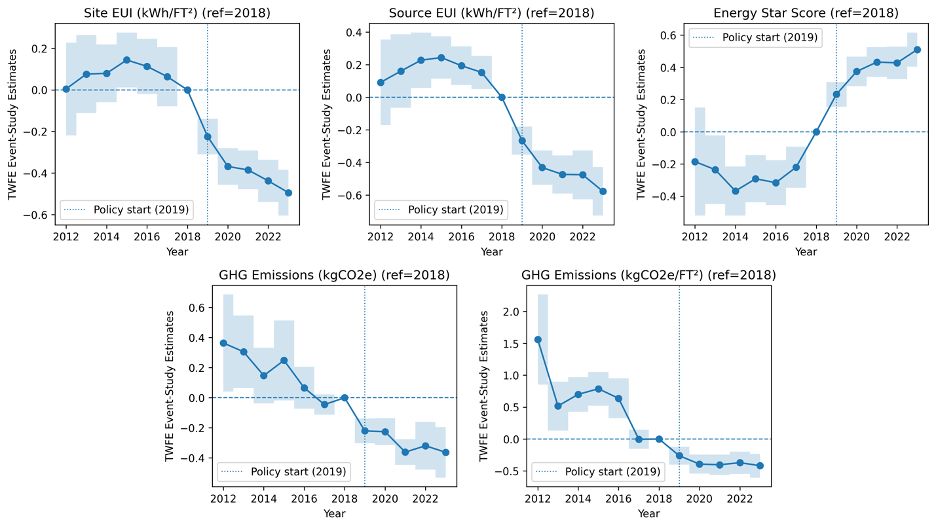

Building Energy Performance Standards: Impacts on Building Energy Efficiency and GHG Emissions in Washington, DC
The accelerating urgency of climate change has prompted cities to implement performance-based energy policies aimed at reducing emissions from the built environment. This study evaluates the ex post causal impacts of Washington, DC’s Building Energy Performance Standards (BEPS), a first-of-its-kind U.S. policy mandating energy efficiency improvements in underperforming buildings. Using panel data from 2012–2023, the study investigates whether BEPS has generated measurable reductions in building energy use intensity (EUI) and greenhouse gas (GHG) emissions and how impacts vary across building ownership types. Unlike prior modeling and simulation studies (Andrews & Jain 2023; Webb & McConnell 2023; Palmer & Walls 2017), this analysis provides empirical evidence on realized outcomes. The findings reveal that BEPS led to significant improvements in energy efficiency and emissions performance, particularly among buildings with the largest pre-policy compliance gaps. By evaluating one of the earliest operational BEPS regimes, the study provides timely evidence for the effectiveness of performance-based standards in advancing urban decarbonization.
The analysis draws on building-level panel data from the District of Columbia Department of Energy and Environment (DOEE) Open Data portal covering 2012–2023. The dataset includes annual observations on site and source EUI, Energy Star scores, total and intensity-based GHG emissions, property type, size, and ownership. To operationalize policy exposure, a continuous treatment variable—the “compliance gap”—is constructed as the difference between each building’s pre-policy baseline and the applicable BEPS threshold. Three hypotheses guide the analysis:
The empirical framework applies a continuous-treatment two-way fixed effects (TWFE) model to estimate causal effects of BEPS on energy and emissions outcomes. The key regressor is the interaction between the compliance gap and a post-policy indicator, capturing how buildings with greater pre-policy inefficiency respond once the standard becomes binding. Event-study models assess the parallel trends assumption and trace the dynamic impacts of BEPS over time. Robustness checks include alternative gap definitions (property-type mean, percentile, and citywide) and inverse probability weighting (IPW) to address potential attrition bias in the unbalanced panel.
Yit = β₀(Postt × Gapi,v) + αi + τt + εit
The findings demonstrate that BEPS produced measurable improvements in both energy efficiency and GHG emissions outcomes. Buildings with larger pre-policy compliance gaps achieved greater reductions in energy use intensity and emissions intensity once BEPS became binding. Specifically, each additional unit of pre-policy gap reduced site and source EUI by 0.34 and 0.47 kWh/ft², respectively, raised Energy Star scores by 0.41 points, and lowered GHG emissions by 0.38 million KgCO₂e and 0.70 KgCO₂e/ft². Weighted estimates confirm these effects, with total emissions reductions of up to 0.57 million KgCO₂e per unit gap.
| Site EUI (kWh/ft²) |
Source EUI (kWh/ft²) |
Energy Star Score | GHG Emissions (KgCO₂e) |
GHG Intensity (KgCO₂e/ft²) |
|
|---|---|---|---|---|---|
| A: Unweighted Estimates | -0.343*** (0.036) | -0.472*** (0.059) | 0.412*** (0.039) | -0.375*** (0.084) | -0.704*** (0.039) |
| Building FE | Yes | Yes | Yes | Yes | Yes |
| Year FE | Yes | Yes | Yes | Yes | Yes |
| Observations | 12,347 | 12,347 | 10,980 | 12,347 | 12,347 |
| R² (within) | 0.108 | 0.245 | 0.063 | 0.356 | 0.340 |
| B: IPW-Weighted Estimates | -0.323*** (0.038) | -0.459*** (0.063) | 0.415*** (0.040) | -0.566*** (0.063) | -0.728*** (0.035) |
| Building FE | Yes | Yes | Yes | Yes | Yes |
| Year FE | Yes | Yes | Yes | Yes | Yes |
| Observations | 11,654 | 11,654 | 10,980 | 11,654 | 11,654 |
| R² (within) | 0.097 | 0.236 | 0.063 | 0.130 | -2.427 |
Standard errors in parentheses. Significance: *** p < 0.01, ** p < 0.05, * p < 0.10.
Figure 1: Event-Study Plots of BEPS Impacts
Note: Insert event-study graph showing dynamic BEPS treatment effects over time.
This study contributes to the literature on energy policy evaluation, urban decarbonization, and building energy economics in several ways. First, it provides one of the first ex post causal analyses of BEPS, complementing prior ex ante modeling efforts from Palmer & Walls (2017) and Andrews & Jain (2023). Second, it extends the methodological frontier by applying a continuous-treatment TWFE framework, offering a scalable approach to evaluate performance-based policies that vary in intensity. Third, by disaggregating results across ownership categories, the study shows that public buildings achieved greater emissions gains, while private buildings improved efficiency more sharply, confirming BEPS as an effective policy for urban decarbonization. Finally, the results have global policy relevance, showing that performance-based energy standards can achieve meaningful decarbonization when coupled with transparent benchmarking data and flexible compliance pathways.
Andrews, Abigail, and Rishee Jain. 2023. “Evaluating Building Decarbonization Potential in U.S. Cities under Emissions-Based Building Performance Standards and Load Flexibility Requirements.” Journal of Building Engineering, 76: 107375.
Webb, Amanda, and Colby McConnell. 2023. "Evaluating the feasibility of achieving building performance standards targets." Energy and Buildings, 288: 112989.
Palmer, Karen, and Margaret Walls. 2017. "Using information to close the energy efficiency gap: a review of benchmarking and disclosure ordinances." Energy Efficiency, 10(3): 673–691.
District of Columbia Council. 2008. Clean and Affordable Energy Act of 2008. Washington, DC: DC Council. [Link]
District of Columbia Council. 2018. Clean Energy DC Omnibus Amendment Act of 2018. Washington, DC: DC Council. [Link]
District Department of Energy & Environment (DOEE). 2019. Building Energy Performance Standards (BEPS) Program Guidebook. Washington, DC: DOEE.
District of Columbia Department of Energy & Environment (DOEE). 2021. Building Energy Performance Standards (BEPS) Compliance Guidebook. Washington, DC: Government of the District of Columbia. [Link]